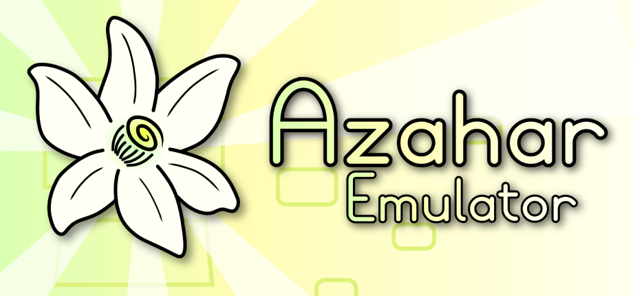
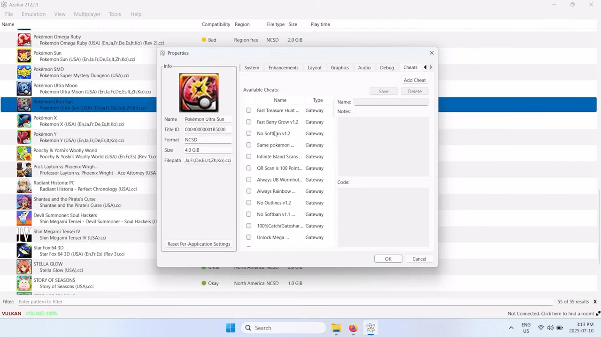
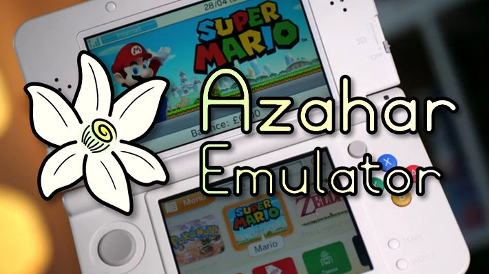

Emulatore: Azahar

Per quanto riguarda il 3DS, la mia preferenza va senza dubbio ad Azahar. Si tratta di un fork migliorato di Citra, pensato per offrire prestazioni eccellenti sui dispositivi moderni — anche portatili — con una fluidità sorprendente persino con i giochi poligonali più pesanti.
Uno dei vantaggi principali è l'up-scaling grafico: è possibile aumentare la risoluzione interna dei giochi, ripulendo i pixel e trasformando vecchi giochi poligonali in piccoli titoli moderni e definiti.

Azahar riesce a far girare giochi 3DS in modo fluido e stabile, rendendo l'esperienza estremamente piacevole. Rispetto ad altri emulatori 3DS che ho provato nel tempo, si distingue soprattutto per la semplicità di configurazione iniziale: in pochi minuti si è già operativi, senza dover mettere mano a file di configurazione complessi.
Il limite più evidente risiede nei requisiti hardware: i titoli 3DS particolarmente esigenti possono causare surriscaldamenti del telefono e cali di frame rate su dispositivi meno recenti. Anche su PC, una macchina datata potrebbe faticare con certi giochi. La gestione dei titoli avviene in modo vecchio stile, organizzando manualmente le cartelle e i formati dei file.
La funzione di up-scaling grafico è senza dubbio il fiore all'occhiello: poter giocare a titoli come Pokémon X/Y o The Legend of Zelda: Ocarina of Time 3D con una risoluzione nettamente superiore a quella originale trasforma completamente l'esperienza visiva, rendendo giochi di oltre dieci anni fa sorprendentemente attuali.
